Date: 2026-03-16 | Question: Where does the project stand across all experiments?
Experiments: 3 SFT + 14 GRPO = 17 total | Model: Qwen3-8B-Instruct | Data: 4.89M SFT + 10K downstream
sftgrporltrainingevaluationmilestone
As of March 16, 2026, the project has run 3 SFT and 14 GRPO experiments across 2 approaches (ESM3+MLP, Text-only). SFT results are clear: MLP achieves eval_loss 0.361 vs Text-only 1.207 (3.3x better, p<0.000001). GRPO results reveal a paradox: despite MLP's superior SFT loss, Text-only achieves higher GRPO reward on structure quality (0.832 vs 0.774, p=0.0005). The frozen-multimodal configuration partially closes this gap (0.774 mean_reward). The Perceiver path never completed training. 9 of 14 GRPO runs completed successfully; the remainder were early-stopped or interrupted.
results/), blog/data/03-13/analysis_summary.json, blog/data/03-15/token_avg_loss (true per-token average) for SFT; mean_reward for GRPO| Parameter | MLP (ESM3) | Text-only | MLP+Thinking |
|---|---|---|---|
| Experiment | sft_esm3_mlp_combined_qwen3_8b_it_0306 |
sft_text_combined_qwen3_8b_it_0307 |
sft_esm3_mlp_thinking_qwen3_8b_it_0309 |
| Approach | ESM3 + MLP projector | Raw AA sequence tokens | ESM3 + MLP + thinking mode |
| Steps completed | 9,750 | 9,640 | 500 (incomplete) |
| Epochs | 1.03 | 0.86 | 0.05 |
| Best eval_loss | 0.361 (step 9750) | 1.207 (step 8000) | 0.613 (step 500) |
| Final token_avg_loss | 0.438 | 1.643 | 0.830 |
| Min token_avg_loss | 0.306 (step 8280) | 1.342 (step 8000) | 0.634 (step 500) |
| Training hours | 53.9h | ~50h (est.) | ~3h (est.) |
| Status | Completed | Completed (no completed_at) | Incomplete (500/~9750 steps) |
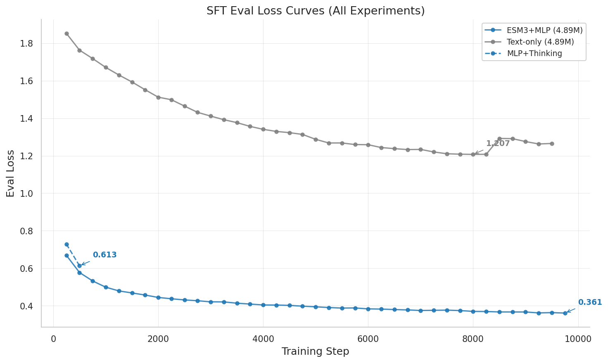
Fig: SFT eval loss curves. MLP (blue) reaches 0.361, Text (gray) reaches 1.207, Thinking (green) at 0.613 after only 500 steps.
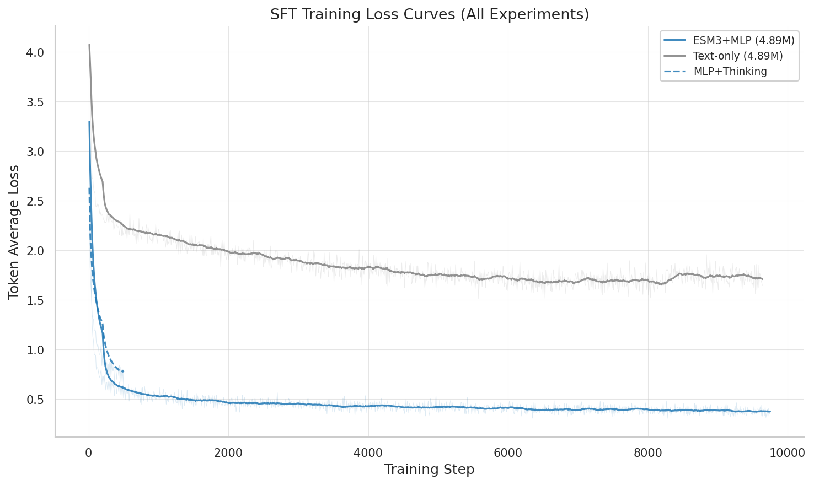
Fig: SFT training loss (token_avg_loss, MA-20 smoothed). MLP converges to ~0.38, Text to ~1.72.
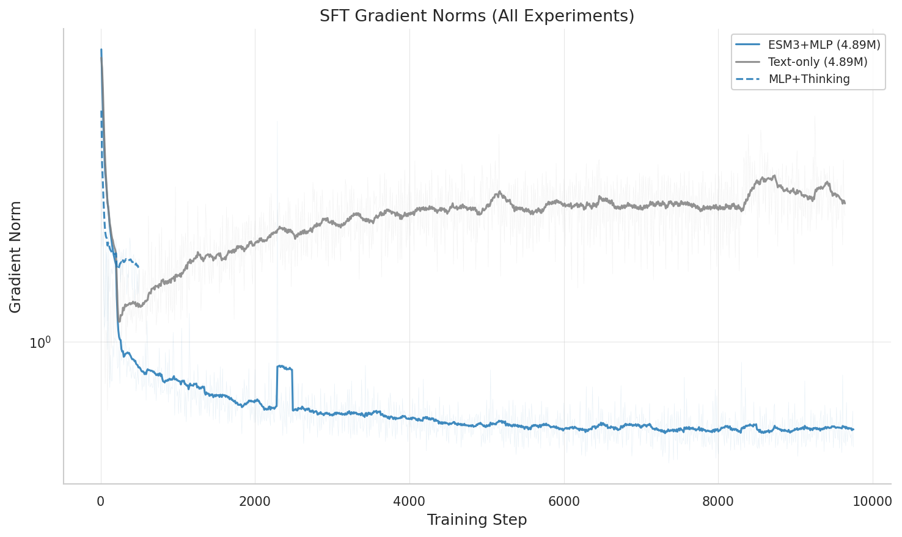
Fig: Gradient norms (log scale). MLP median 0.58, Text median 2.37 — 4x higher gradient norms in text-only.
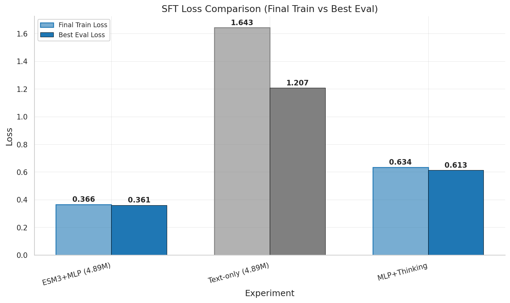
Fig: Final train loss + best eval loss per SFT experiment.
| Category | Count | Completed | Approach | Task |
|---|---|---|---|---|
| ProteinLM-Bench | 2 | 2 | ESM3+MLP | Mol-Instructions matching |
| Structure MLP | 5 | 2 | ESM3+MLP | Structure quality prediction |
| Structure Text | 2 | 2 | Text-only | Structure quality prediction |
| Frozen-MM | 3 | 2 | ESM3+MLP (frozen projector) | Structure quality prediction |
| Classify | 2 | 2 | MLP + Text | Binary classification format |
| Experiment | Approach | Config | mean_reward | Reward Trend | LoRA grad |
|---|---|---|---|---|---|
grpo_structure_text_sft_0312_032738 |
Text | Standard | 0.832 | Improving (+34.4%) | 0.476 |
grpo_structure_mlp_sft_0311_114205 |
MLP | Standard | 0.780 | — | ~0 (dead) |
grpo_structure_mlp_frozen_mm_0312_101631 |
MLP | Frozen-MM | 0.774 | Improving (+38.3%) | 0.071 |
grpo_structure_text_sft_0311_142908 |
Text | Standard | 0.753 | Improving (+156.5%) | 0.493 |
grpo_structure_mlp_frozen_mm_focal_0312_182035 |
MLP | Frozen-MM+Focal | 0.725 | Improving (+60.6%) | 0.119 |
grpo_structure_text_classify_0313_010828 |
Text | Classify | 0.710 | Improving (+35.8%) | 0.250 |
grpo_proteinlm_mlp_sft_0310_214259 |
MLP | ProteinLM-Bench | 0.695 | Flat | 0.386 |
grpo_proteinlm_mlp_sft_0311_091513 |
MLP | ProteinLM-Bench | 0.676 | Flat (-7.9%) | 0.404 |
grpo_structure_classify_0312_215435 |
MLP | Classify | 0.598 | Improving (+70.2%) | 0.123 |
grpo_structure_mlp_sft_0312_011859 |
MLP | Standard | 0.582 | Flat (+2.9%) | ~0 (dead) |
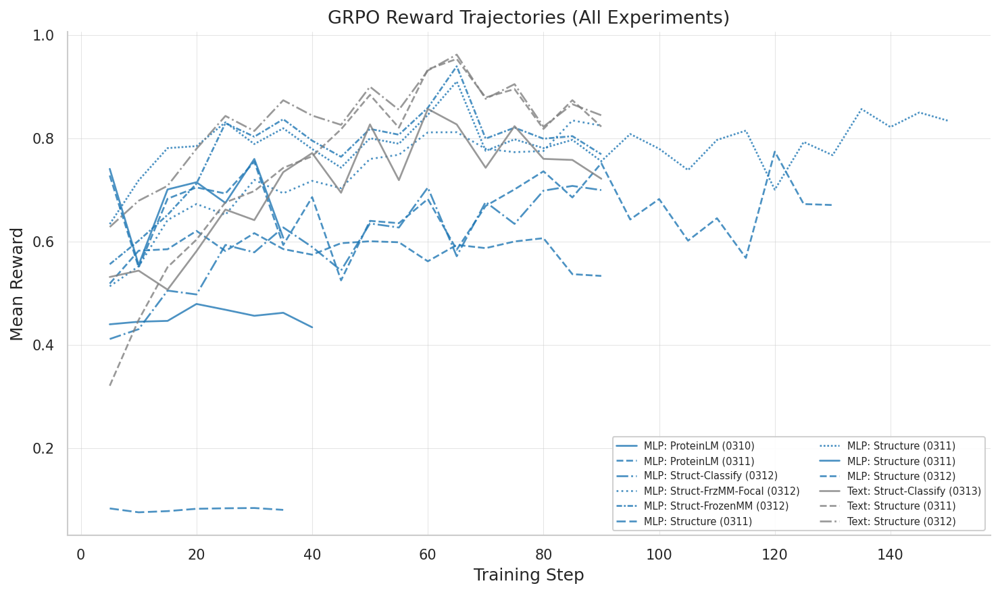
Fig: GRPO mean_reward vs step for all 13 runs with step data. Text runs (gray) consistently reach higher rewards.
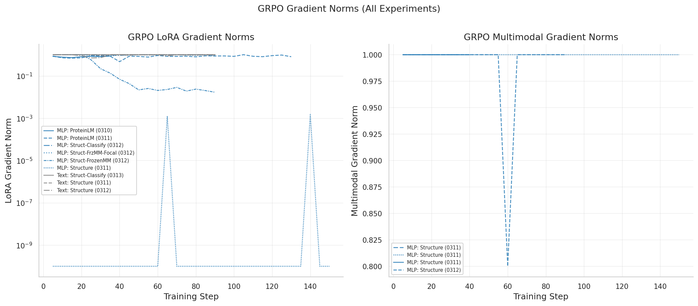
Fig: GRPO gradient norms. Left: LoRA grads (MLP standard runs show near-zero). Right: Multimodal grads.
| Metric | Best Text | Best MLP (Frozen-MM) | Best MLP (Standard) |
|---|---|---|---|
| mean_reward | 0.832 | 0.774 | 0.780 (grad dead) |
| quality_alignment | 0.351 | 0.347 | 0.354 |
| numerical_accuracy | 0.185 | 0.169 | 0.162 |
| category_match | 0.197 | 0.164 | 0.163 |
| format_bonus | 0.099 | 0.095 | 0.100 |
| LoRA grad_norm | 0.476 | 0.071 | ~0 (dead) |
| Format compliance | ~100% | ~95% | Variable (0-100%) |
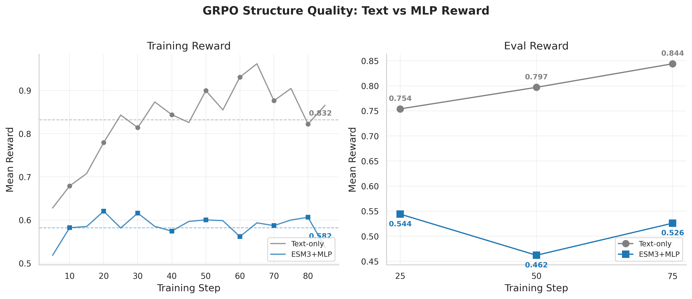
Fig 13: GRPO structure reward trajectories — Text (gray) vs MLP (blue). Text consistently higher.
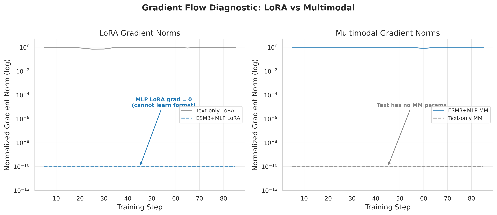
Fig 16: Gradient flow diagnostic. Standard MLP LoRA grad = 0 (cannot learn format), while Text LoRA grad is healthy.
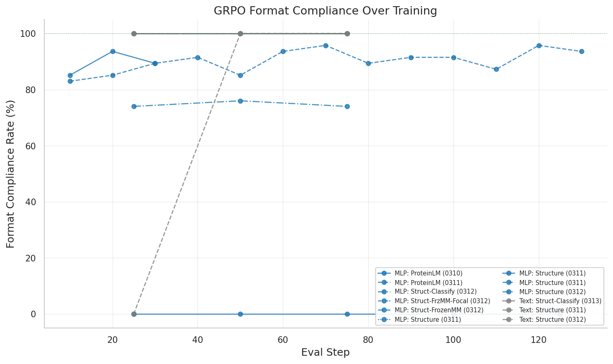
Fig: Format compliance over training. Text runs maintain ~100%, MLP varies widely by configuration.
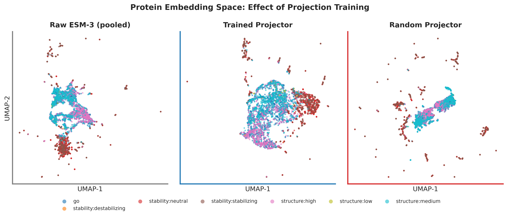
Fig 12: UMAP visualization — Raw ESM-3 vs Trained MLP vs Random projector. All show similar clustering.
sft_esm3_perceiver_combined_qwen3_8b_it_0308_165601 only has an empty log directory.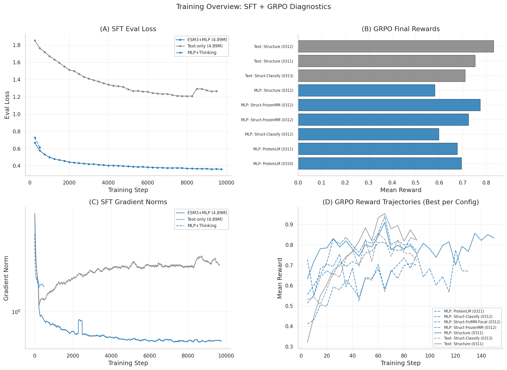
Fig: 4-panel overview — (A) SFT eval loss, (B) GRPO final rewards, (C) SFT grad norms, (D) GRPO reward trajectories.
| Stage | Approach | Best Config | Key Metric | Value |
|---|---|---|---|---|
| SFT | ESM3+MLP | Standard | Best eval_loss | 0.361 |
| SFT | Text-only | Standard | Best eval_loss | 1.207 |
| SFT | ESM3+MLP | Thinking mode | eval_loss (500 steps) | 0.613 |
| GRPO Structure | Text-only | Standard (0312) | mean_reward | 0.832 |
| GRPO Structure | ESM3+MLP | Frozen-MM | mean_reward | 0.774 |
| GRPO Structure | ESM3+MLP | Frozen-MM+Focal | mean_reward | 0.725 |
| GRPO ProteinLM | ESM3+MLP | Standard (v1) | mean_reward | 0.695 |
| GRPO Classify | Text-only | Binary format | mean_reward | 0.710 |
| GRPO Classify | ESM3+MLP | Binary format | mean_reward | 0.598 |